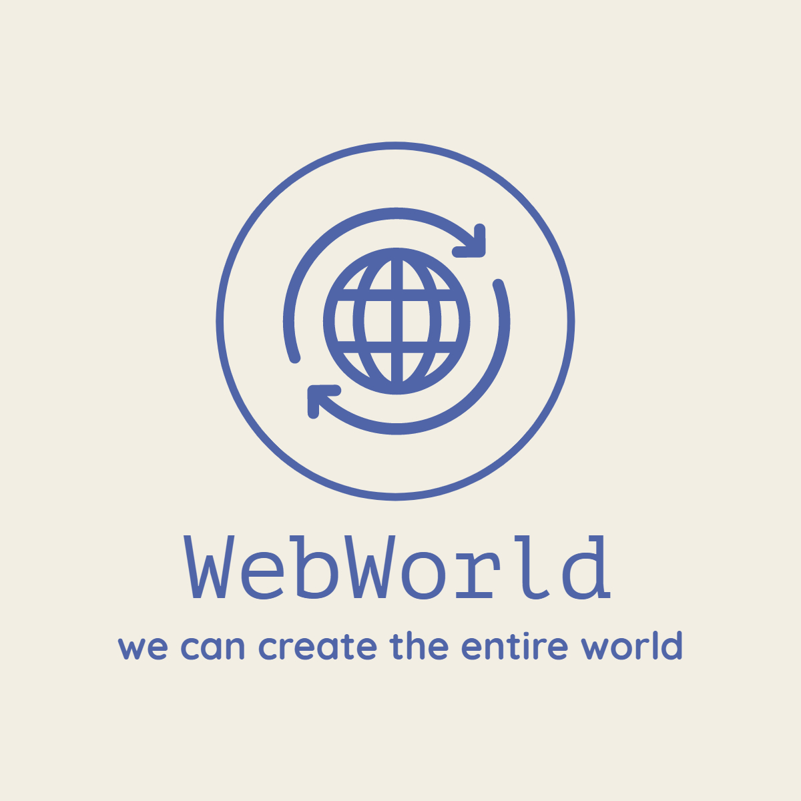
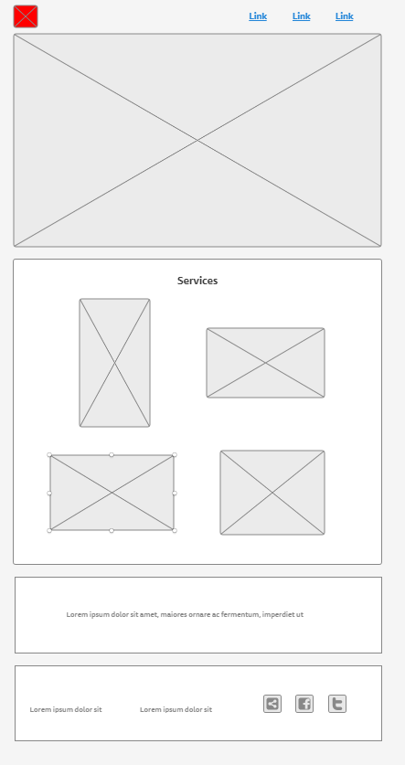
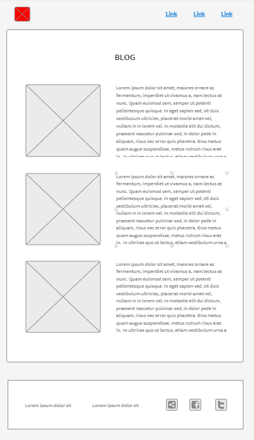
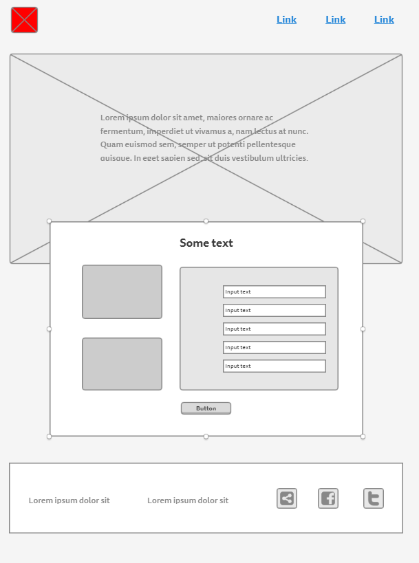

Overview
Purpose
I work with tech, I am a computer programmer, I design and create web pages My company develops web pages for big and small business, any business you could image My company is known to develop efficient web pages, the clients we have are happy and they present a growth in their business. This is because of the positioning and the great design of a web page. Have you ever thought about what a good web page with a good positioning can do for your company? This is what I do, help business to grow faster
Audience
The audience I look for are companies that have recently started their business because we can create fancy landing pages to get the attention of clients. Also, we have the experience to boost big companies,we improve old landing pages, make their websites faster, make programs they need, we have that knowledge to help big companies. Finally startups, we offer services of guiding in the path of startups, we help them to avoid mistakes and help them to save time, also services of programmers for their needs.
Branding
Website Logo
Style Guide
Color Palette
Palette URL: https://coolors.co/0d1b2a-1b263b-415a77-778da9-e0e1dd| Primary | Secondary | Accent 1 | Accent 2 | Accent 3 |
|---|---|---|---|---|
| [#0D1B2A] | [#1B263B] | [#415A77] | [#415A77] | [#E0E1DD] |
Typography
Heading Font: 'Heebo'
Paragraph Font: 'Ubuntu'
Normal paragraph example
When we dwelt in the presence of God our Heavenly Father, we were endowed with agency. This gave us the opportunity, the privilege, to choose what we would do—to make a free, untrammeled choice. When Father Adam was placed in the Garden of Eden, he was given this same power, and we now possess it. We’re expected to use the gifts and talents and abilities, the sense and judgment and agency with which we are endowed.
Colored paragraph example
But on the other hand, we’re commanded to seek the Lord, to desire his Spirit, to get the spirit of revelation and inspiration in our lives. We come unto the Church and a legal administrator places his hands upon our head and says, “Receive the Holy Ghost.” This gives us the gift of the Holy Ghost, which is the right to the constant companionship of that member of the Godhead, based on faithfulness.
And so we’re faced with two propositions. One is that we ought to be guided by the spirit of inspiration, the spirit of revelation. The other is that we’re here under a direction to use our agency, to determine what we ought to do on our own; and we need to strike a fine balance between these two, if we’re going to pursue a course that will give us joy and satisfaction and peace in this life and lead to eternal reward in our Father’s kingdom
Navigation
Site Map
Content
Home page
The plan I have in mind for the home page is create a landing page, I want to get the attention of the customers since the first moment, the first image they are going to see is a group of people working together, I want customers have the idea that we work as a team, that image shows smiley people, that means we enjoy what we do, i want they feel confident in us, if you see people working together happily that means those people are happy in their job when you are happy doing you job you always do a great job. Then I will use four other images like buttons, those images will be “landing pages” , “coding”, “programmers”, and “Startups”, those will be the services I am offering in my business. The landing page services will create fancy landing pages and the seo and one example is this web page. The coding service is when people want to improve the web page, for example the speed of a page, we can clean the code, or maybe if a company wants a specific program, we can create that program. The programmer's service is about offering programmers for specific purposes. If a company wants python programers, we give them python programmers already capable of working efficiently in that company. Finally startups, in this service we guide them in the process of the creation of the startups, this is just guiding, so if they want other services, it will have another cost.
Images for the Home page


Blog
The idea of the blog is to make customers consolidate their decision about the services by reading the testimonies of other people who have already taken the services in my company. I plan to show three testimonies of two women and one man. The first woman will share a testimony about the landing page we created for her and how successful his business became not just for the fancy page but also for the work of SEO that is included in that service. The other woman will share the testimony of the services of programmers and how the programmers we gave them work efficiently in his business. She was looking for react programmers and we prepared those programmers with specific requirements the client provided before. The man is going to share the testimony of startups how the guidance we offer helps him in the process of creating a startup, also the service of coding and how this service helps him to save time, time is a precious asset in any business. Finally we will put a button to link to a page when we will get the information to contact these people and make an appointment to talk better and if they have some doubt we can solve it.
Images for the Page 2


Contact us
The purpose of the last page is to make customers share with us some information we need to prepare for them a personal presentation related with the service or services they want more information. The information I will ask for is : name, last name, age, business, time in the business, the expectation they have for the service, why is he or she looking for this kind of service, what is the color of the logo of your business and finally their email. It has been said that the sweetest words we can hear is our name, knowing the name is important. We want to know the age because we grow in different generations and every generation thinks differently and the age is important in this case.The time they have in the business helps to offer them more specific information . Their expectations are important because we can show them projects already finished.The color of the logo is to show them a palette of colors to create in the case they want a landing page and suggest options. And finally their email will be the way to contact them and make an appointment virtually or physically, depending on the situation.
Images for the Page 3

Wireframes
Create three wireframes for your site. One for each page and list them here
HOME

BLOG

CONTACT US
